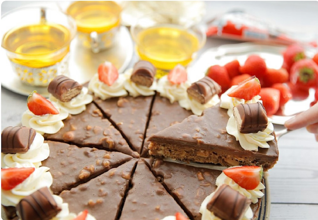

15 november 2020
Als er een soort chocolade is die nostalgische gevoelens opwekken bij mij, dan is dat de Kinder Bueno! Het was altijd een bijzonder moment wanneer mijn vader thuiskwam met een Kinder Bueno. Deze deelden wij als broertjes en zusjes onderling. Het was niet veel, maar wel superlekker!
Ingredients
- - 550 g boerencake
- - 100 g monchou
- - 75 g Nutella
- - 75 g hazelnoot
- - 3 kinder bueno repen
Topping
- - 60 ml ongeklopte slagroom
- - 100 g melkchocolade
- - 25 g hazelnoot
Slagroom
- - 250 ml ongeklopte slagroom
- - 8 g vanillesuiker
- - 1 el kristalsuiker
- - 8 g klopfix
Slagroom
- - 1 kinder bueno bar
- - aardbeien
Stap 1
Hak de Kinder bueno bars in stukken.
Stap 2
Doe de hazelnoten in een hakmolen en mix grof (100 gram).
Stap 3

Doe de boerencake samen met de monchou in een kom. Kneed samen tot een geheel. Voeg de Nutella, hazelnoot (75 gram) en stukjes Kinder bueno toe. Meng goed.
Stap 4

Schep het cake-mengsel in een springvorm. Druk goed en stevig aan voordat je het egaal maakt.
Stap 5

Doe de ongeklopte slagroom in een steelpan en breng het tot tegen de kook aan. Haal de steelpan van het vuur en voeg de stukgemaakte chocolade toe. Laat het staan voor een minuut. Na een minuut roer je het samen tot een gladde massa. Voeg de stukjes hazelnoot (25 gram) toe en meng goed. Laat de ganache met hazelnoot 5 minuten afkoelen.
Stap 6

Giet de hazelnoot-ganache-topping over de cake en verdeel het over de cake. Houd de bakvorm vast en maak schuine bewegingen zodat de topping gelijkmatig verdeeld wordt. Leg de bueno taart afgedekt in de koelkast voor een uur om stevig te worden, mag ook langer.
Stap 7

Maak ondertussen je eigen slagroom. Je kunt ook kant en klare slagroom gebruiken alleen houd wel rekening met het feit dat deze slagroom snel inzakt. Doe de (koude) ongeklopte slagroom samen met de vanillesuiker, suiker en klopfix in een diepe kom. Klop net zolang door totdat er pieken ontstaan. Doe de slagroom in een spuitzak met spuitmondje en bewaar in de koelkast.
Stap 8

Snijd de cake in stukken. Spuit er toefjes room op. Garneer de taart met stukjes bueno en aardbei.
Stap 9

Stap 10